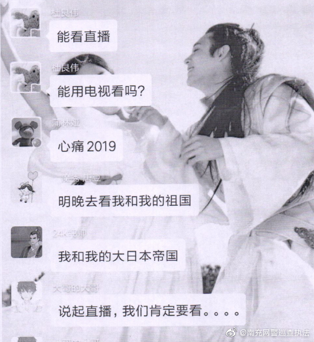
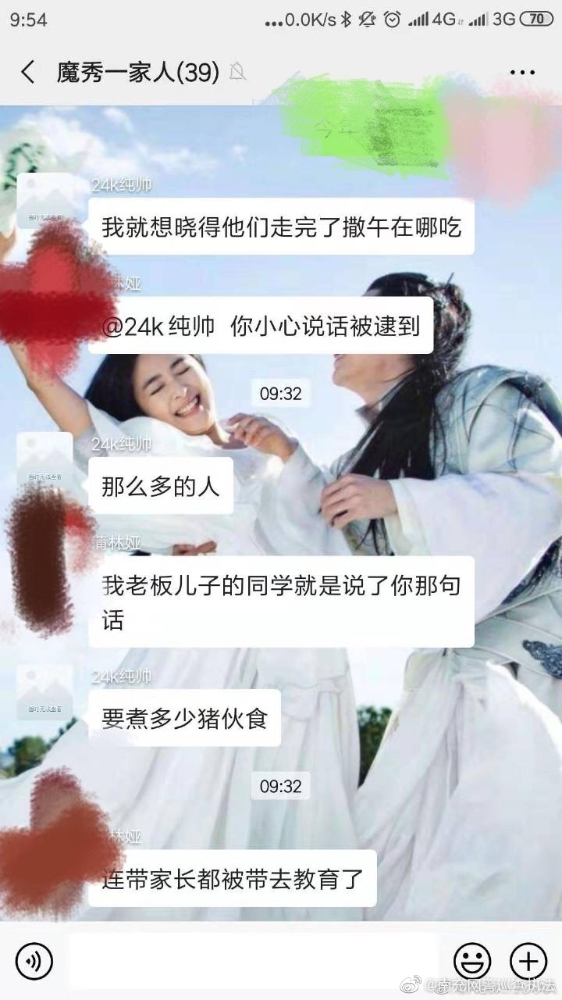
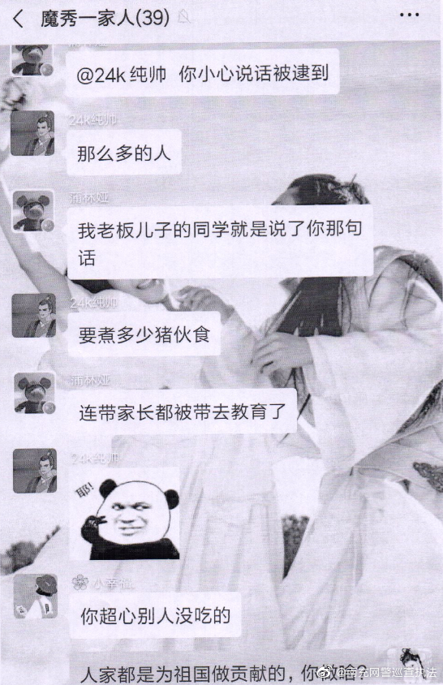

看这个新闻感觉可怕，看新闻下评论感觉更可怕。因言获罪的历史会再次降临么？//@李思磐:很显然是同一群的人报警。
@南充网警巡查执法:
南充阆中网警依法行政拘留一侮辱阅兵式官兵的网民
#我们都是护旗手##国庆阅兵# 2019年9月29日，在全国人民普天同庆喜迎新中国成立70周年之际，南充网警接网民举报，南充网民“24K纯帅”涉嫌在网上肆意发布侮辱参加70周年大庆阅兵式官兵的言论，引发广大网民的强烈愤慨。
南充网警根据网民举报线索迅速开展核实工作并指令阆中网警查处。现查明：9月29日上午，网民“24K纯帅”（真实姓名，戚某龙，24岁，男，阆中人）在网上发布“精日”言论并针对国庆阅兵式多次发表不当言论，虽经其他网民提醒，仍然肆意侮辱参加阅兵式人员。阆中网警将戚某龙传唤到案后，该戚对自己的违法行为供认不讳。根据中华人民共和国《治安管理处罚法》第二十六条之规定，9月30日凌晨，阆中市公安局依法对其作出行政拘留7日的决定。目前，拘留正在执行。
南充网警提醒：网络非法外之地，网民在网络上的言行要恪守真实客观，注重网上道德,遵守国家的有关法律法规,承担因自己的行为而引起的法律责任，逞一时口快，换来的将是法律的严惩。 南充
#我们都是护旗手##国庆阅兵# 2019年9月29日，在全国人民普天同庆喜迎新中国成立70周年之际，南充网警接网民举报，南充网民“24K纯帅”涉嫌在网上肆意发布侮辱参加70周年大庆阅兵式官兵的言论，引发广大网民的强烈愤慨。
南充网警根据网民举报线索迅速开展核实工作并指令阆中网警查处。现查明：9月29日上午，网民“24K纯帅”（真实姓名，戚某龙，24岁，男，阆中人）在网上发布“精日”言论并针对国庆阅兵式多次发表不当言论，虽经其他网民提醒，仍然肆意侮辱参加阅兵式人员。阆中网警将戚某龙传唤到案后，该戚对自己的违法行为供认不讳。根据中华人民共和国《治安管理处罚法》第二十六条之规定，9月30日凌晨，阆中市公安局依法对其作出行政拘留7日的决定。目前，拘留正在执行。
南充网警提醒：网络非法外之地，网民在网络上的言行要恪守真实客观，注重网上道德,遵守国家的有关法律法规,承担因自己的行为而引起的法律责任，逞一时口快，换来的将是法律的严惩。 南充
- 

- 
- 